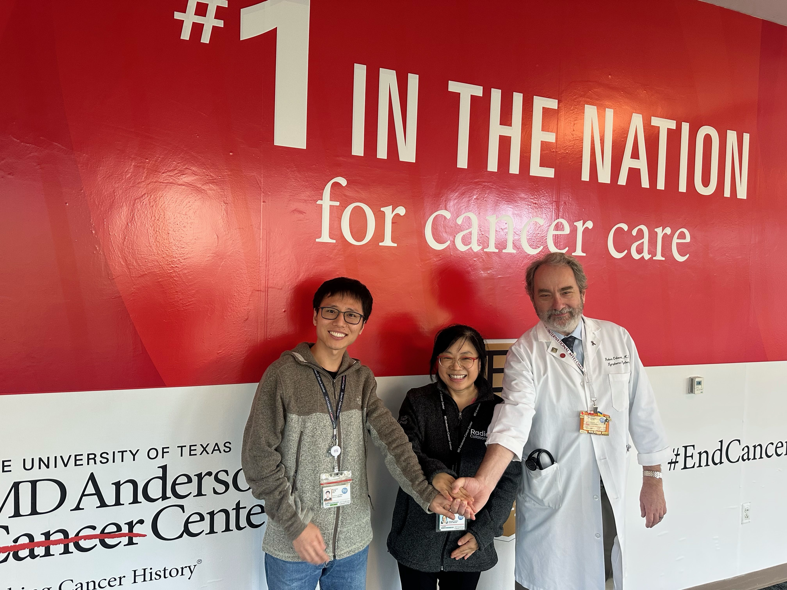
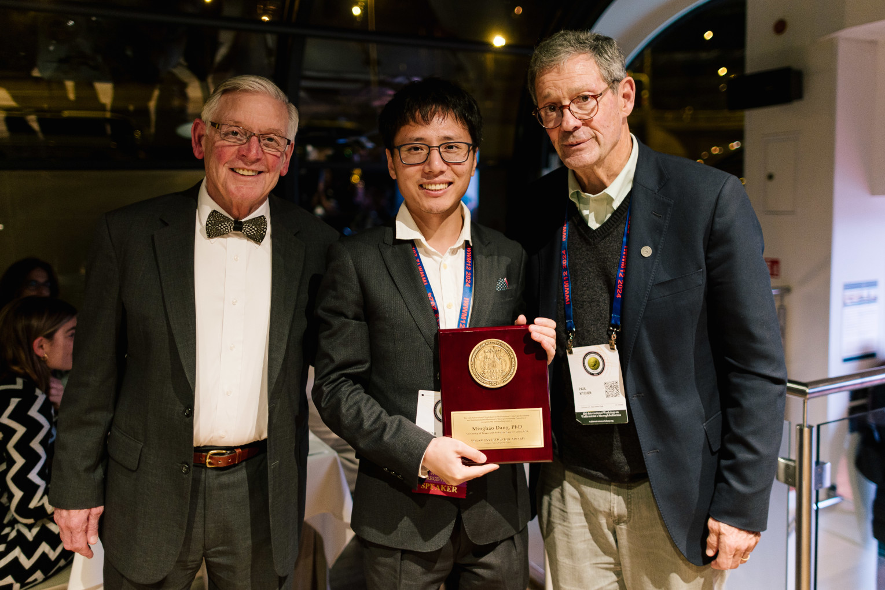
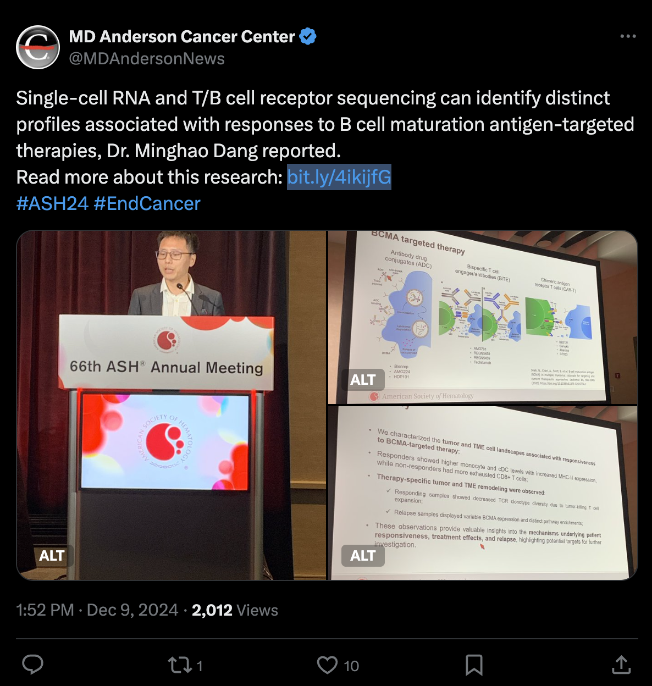

肿瘤单细胞多组学
围绕恶性肿瘤，利用单细胞多组学解析肿瘤异质性与克隆演化。
即将入职中山大学中山医学院（广州）
国家海外高层次人才计划入选者
我是党明浩，生物化学与分子生物学博士。主要关注多发性骨髓瘤等血液肿瘤，聚焦肿瘤单细胞多组学、肿瘤免疫微环境与精准免疫治疗，探索肿瘤异质性、克隆演化及免疫微环境重塑机制。
了解招生信息党明浩博士以特邀专家身份参加在美国加利福尼亚州棕榈泉举行的 IWWM-13 并作报告。
党明浩博士作为第一作者参与的多发性骨髓瘤疾病谱中肿瘤微环境研究在 Blood 在线发表。
党明浩博士在美国佛罗里达州奥兰多举行的第 67 届 ASH 年会上作口头报告。
党明浩博士作为共同第一作者参与的 PPP2R1A 突变与癌症免疫治疗研究在 Nature 在线发表。
党明浩博士在美国加利福尼亚州圣迭戈举行的第 66 届 ASH 年会上作口头报告，并获摘要成就奖（Abstract Achievement Award）。
党明浩博士受邀在捷克布拉格举行的 IWWM-12 作大会报告，并获青年科学家奖。
党明浩博士作为共同第一作者参与的帕博利珠单抗联合化疗治疗晚期卵巢癌研究在 Med 在线发表。
党明浩博士作为共同第一作者参与的按 IDH 状态分层的原发与复发胶质瘤免疫微环境研究在 Neuro-Oncology 在线发表。
党明浩博士在美国加利福尼亚州圣迭戈举行的第 65 届 ASH 年会上作口头报告。
党明浩博士作为第一作者参与的多发性骨髓瘤前驱疾病单细胞克隆与转录演化研究在 Cancer Cell 在线发表。
党明浩博士入选国家海外高层次人才计划，即将入职中山大学中山医学院（广州）。毕业于华中科技大学和中国科学院生物物理研究所，分别获得生物信息技术学士学位和生物化学与分子生物学博士学位。曾在美国贝勒医学院和杜克大学从事计算生物学研究，并于 2019 年加入美国 MD Anderson 癌症中心，开展癌症生物信息学和单细胞多组学研究。
围绕恶性肿瘤，利用单细胞多组学解析肿瘤异质性与克隆演化。
研究肿瘤免疫微环境及其重塑机制，理解肿瘤与免疫系统的相互作用。
围绕多发性骨髓瘤等血液肿瘤，开展精准免疫治疗相关研究。
近年来，以第一或共同第一作者身份在以下期刊发表多篇研究论文。
入选国家海外高层次人才计划。多次受邀在美国血液学会（ASH）作大会报告；入选 MSF Computational Biology Fellowship Program；曾获 IWWM 青年科学家奖和 ASH 摘要成就奖。



单细胞 RNA 与 T/B 细胞受体测序揭示与 BCMA 靶向治疗应答相关的特征。
查看完整图片 ↗欢迎咨询研究生培养与科研岗位。
招收具有生物学、生物信息学、医学、免疫学、计算机科学等相关背景的硕士研究生、博士研究生、博士后及科研助理。欢迎有相关研究兴趣的同学来信交流。
肿瘤单细胞多组学、肿瘤免疫微环境及精准免疫治疗。
招生条件、名额、申请时间及培养安排请邮件咨询确认。研究生录取以学校与学院正式招生政策为准。
咨询时，欢迎简要介绍你的教育背景、科研经历与感兴趣的研究方向。